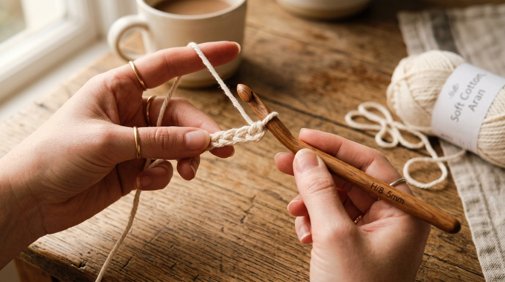
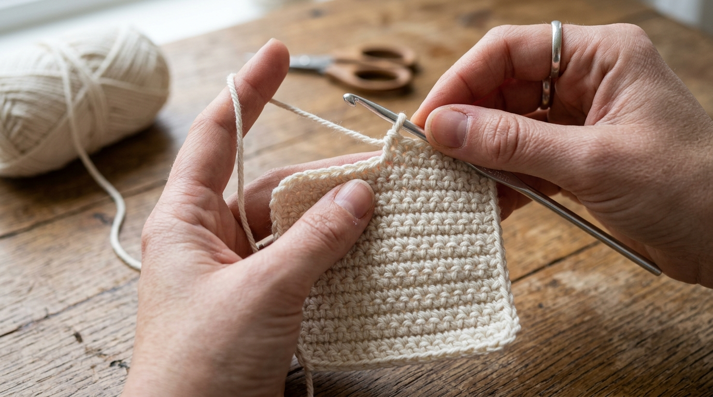
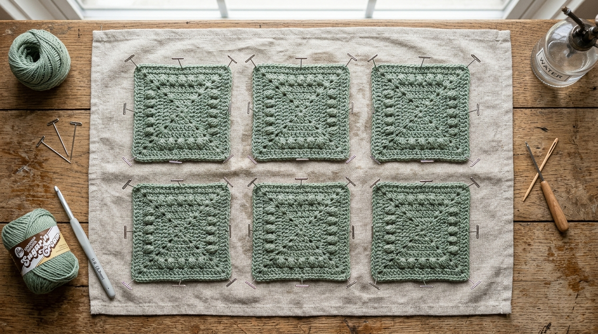

Crocheting a simple square coaster is the single most practical beginner project you can make. It takes less than 45 minutes, uses about 15 grams of cotton yarn, and creates a durable, washable mug mat that protects wooden furniture from heat and water rings.
Below is the complete pattern written in standard US Crochet Terminology. Every step matches the demonstration photos below so you can follow along with 100% clarity!
| Skill Level: | Beginner / Easy |
| Finished Size: | 4 inches x 4 inches (10 cm x 10 cm) |
| Yarn Needed: | 100% Cotton Yarn (Worsted / Category 4), approx. 15 grams |
| Hook Size: | 4.0 mm (US Size G/6) |
| Abbreviations: | ch = chain • sc = single crochet • st(s) = stitch(es) • sl st = slip stitch |
Step-by-Step Instructions
Step 1: The Foundation Chain
Make a slip knot and place it on your crochet hook. Chain 16 loosely. This foundation chain should measure approximately 4 inches across.

Step 2: Working Row 1
Insert hook into the 2nd chain from your hook and work 1 single crochet (sc). Work 1 sc in each remaining chain across to the end. You will have 15 single crochet stitches total. Chain 1, turn your work.
Step 3: Crocheting the Square Body (Rows 2–16)
Work 1 sc in the first stitch and in each stitch across the row. (15 sts). Chain 1, turn. Repeat this row until you have completed 16 rows total, forming a neat 4" x 4" square. Do not cut yarn yet!

Step 4: Adding the Clean Edging Border
To give your coaster crisp, professional edges:
- Single crochet evenly across the top row to the first corner. In the corner stitch, work (1 sc, ch 1, 1 sc) to turn smoothly.
- Single crochet into the end of each row down the side. In the next corner, work (1 sc, ch 1, 1 sc).
- Single crochet across the bottom loops. In the next corner, work (1 sc, ch 1, 1 sc).
- Single crochet up the remaining side. Work (1 sc, ch 1, 1 sc) in the final corner.
- Join with a slip stitch to your first border stitch. Cut yarn leaving a 4-inch tail, pull through, and weave in all loose ends with your yarn needle.
"Placing (SC, Ch 1, SC) in each corner prevents your square coaster from curling at the edges."
Step 5: Wet Blocking for Crisp Flat Corners
Freshly crocheted squares can sometimes look slightly wavy. Wet blocking sets the cotton fibers flat and gives your coaster a crisp, store-bought finish.

- Submerge your finished coaster in lukewarm water for 1–2 minutes.
- Gently press out excess water between a folded towel (do not wring or twist).
- Lay flat on a towel, pull the corners straight into a 4" x 4" square shape, and pin down with stainless steel T-pins.
- Let dry completely overnight—your coaster will stay 100% flat!
Frequently Asked Questions
Written by Gurdeep Sidhu
Founder of Sidhu's Views. Exploring slow living, handmade crafts, aesthetic interior styling, and creative writing.